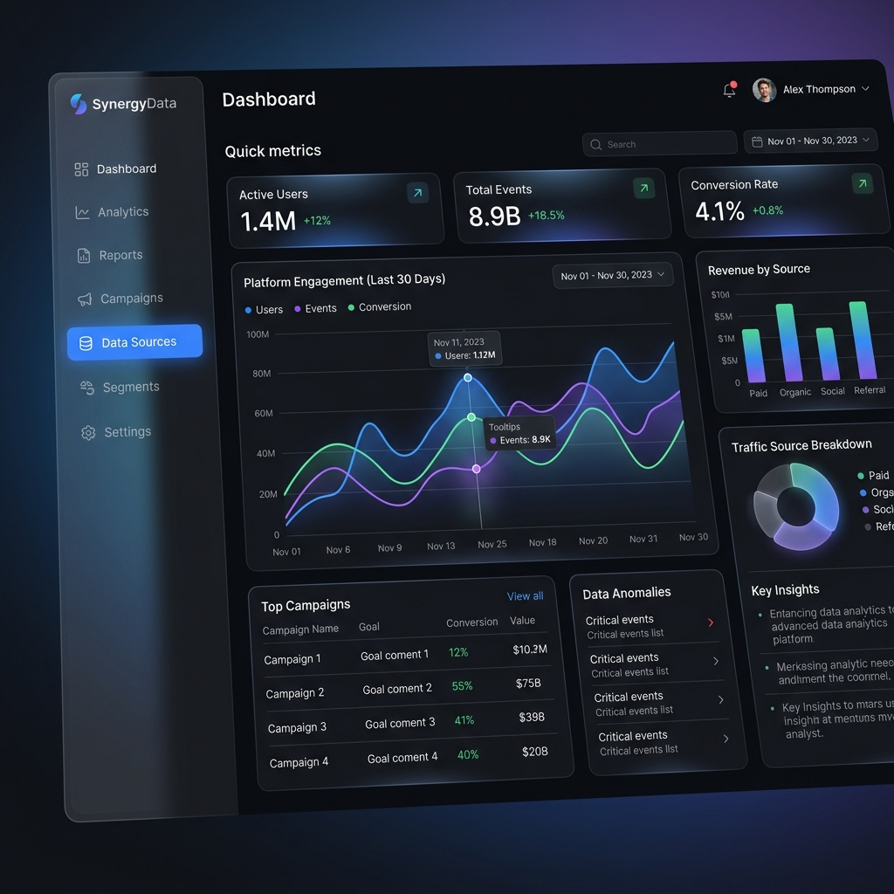
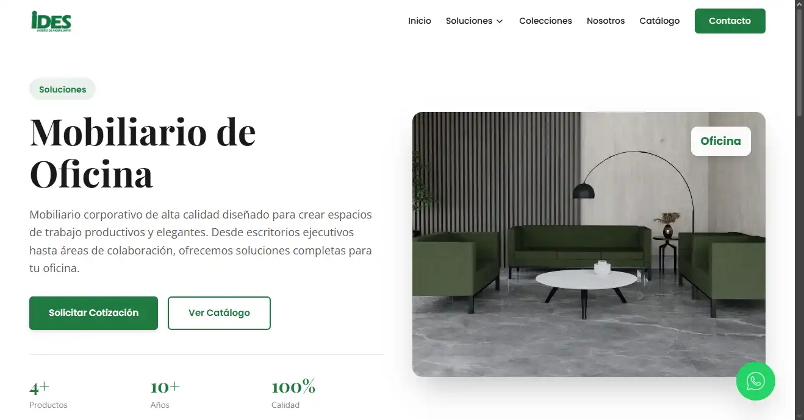

SaaS Ecosystem: Simplifying Complex Data Workflows
"Transformé procesos de datos densos en una interfaz intuitiva mediante la priorización de acciones clave y flujos de usuario optimizados."

Context
Designed a comprehensive dashboard to help users manage large-scale data and workflows efficiently. The goal was to build a tool that feels fast, intuitive, and handles complexity without overwhelming the user.
The Problem
Complex information fragments were scattered across the interface, leading to high cognitive load and navigation friction. Users struggled to find primary actions due to poor visual prioritization.

The Solution
Created highly structured layouts, clear global navigation, and reusable UI components. Prioritization of key actions allowed for a much faster user experience.
- Action-Oriented Design: Placed critical triggers in the "F-Pattern" prime areas.
- Data Summarization: Designed a "Card Ecosystem" for summarizing dense analytics.
- Scalable Navigation: Side-nav architecture focused on accessibility and future growth.
Premium Technical Execution
Accessibility First
Contrast ratios compliant with WCAG 2.1 level AA for data readability.
Dev-Friendly Handover
Every component is a Figma Instance with defined property variables for React.
Micro-interactions
Subtle hover states and page transitions enhance the perception of speed and premium quality.
Results
Significantly improved usability metrics and made complex data easy to navigate. Stakeholders reported a drastic reduction in support tickets related to UX confusion.